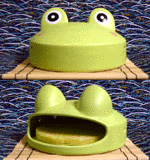
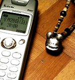

蚊取りはカエルで！デザインは豚からカエル！ 【熊本発=のんたん同志記者】大阪の友人から頂いた蚊取り線香入れのご紹介です。色といい形といいとってもナイスなカエルちゃんだと思いませんか？『きっとこの円らな瞳で蚊のハートを悩殺するのね・・・』と思うくらいの熱〜い眼差し。来年の夏は大活躍してくれることでしょう。でも、あまりの可愛さに使えない可能性大!? ちなみに友人いわく、同じ種類のパンダや熊はけっこう在庫があったのにカエルの蚊取り線香入れは最後の一個だったそうです。そりゃ、当たり前ですよね！
【全国かえる奉賛会】大王もブタの蚊取り入れは持っているが、カエルはないぞ。来年は、このデザインのままで、蚊取り線香を入れるバージョンとともに、昆虫を捕虫する、カエルのべろべろ舌を入れてもらい、蚊だけでなく、蝿もべろろおおおおおんと食べてしまう、舌つきの蚊取りバージョンも期待しようではないか！
完成迫る携帯ストラップ、モロー君の分譲近まる！ 【東京発=モロー寺井同志記者】モローグッズの生産を夏休み返上で行っています。かねてリクエストがあった、モロー君の携帯ストラップを、モロー商会福岡工場で、通常型を。東京工場では、金属タイプを製造しています。また、モロー実像タイプの卓袱台など小道具付属型も生産中です。生産が完了したら、ただちに連絡するので、分譲情報を欠かさずチェックしてください！９月上旬から分譲予定だ。
中華料理店に玉石のカエル！【福岡発=ニャタロウ様】福岡県久留米市の中華の老舗『光華楼』というところで飯食ったんですが、そこのスーベニールに玉石のカエルと言うのがありました。なんかヒスイの様にも見えたのですが箱に￥2000と書いてあって5、6匹入っていたので『安い！』とか思ったのですがよく見たら一個￥2000でした（笑）カエルと亀がなぜかありまして亀はなんとなく判るけどカエルというのは中国でも扱うのですかね？写真焼き増し８月３１日締め切り【福岡かえる展事務局】６月に開催した福岡かえる展の写真を焼き増しします。各ページの写真のうち欲しい写真横についているa-03.jpgなどのファイル名と枚数を教えて下さい。申し込みは、kaeru@kerokero.comへ。お届け先の住所、本名なども忘れずに！受付期間は、８月３０日までです。投稿採用者に武功徽章を授与！ |
かえる古新聞過去に取り上げた記事を見出し付きで一覧したい人は、ここをクリック◆創刊号を見る◆先週号を見る◆話題の号を見る◆かえる新聞の昔を読む
|
私も入っています。。全国かえる奉賛会
大王様に会うには、このバナーをクリック。ずっと奥に写真館があるぞ。全国かえる奉賛会に入会するには、自分のホームページのどこかに、下の部分を追加するとバナーがリンク付きで表示されるぞ。どんどん入会しましょー |


|